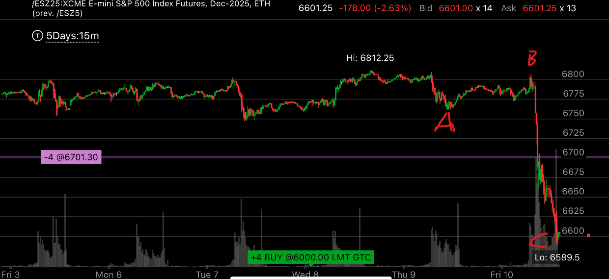
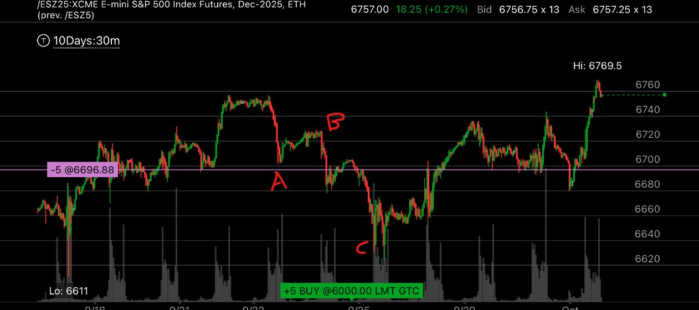

一些奇特的反向加速走势
- 这些走势，虽然看起来奇特，但是因为它包含加速，所以已经实现了反转。


图示:
- 大盘前面出现了慢速五浪上涨走势
- 它然后出现了反向ABC浪，要注意，它的第一浪非常的小，第二浪非常的大，但是A和C都存在加速走势
- A浪和前面的走势配合，形成了相对强势，让交易员认为，这次走势很强，还会继续上涨
- C浪结束后，它没有出现底部平稳的样子，而是立刻反弹。 但是后面会接近低点。 但是不会低于低点。
- 第二张图，显示了它的结束。可见，C的低点没有被打破。它徘徊几天后，就创新高了。

图示:
- 大盘出现了大型的加速上涨走势。然后出现了反向的ABC浪。其中C浪本身又包含一个ABC浪。 要记住，这个不是五浪走势。因为第三浪会变得最短。
- C浪后，它就结束了。要注意，它没有出现底部平稳的样子，而是立刻反弹。
- 它的C浪没有低于前面的五浪C浪的加速点，6611. 按理说，应该低于这里